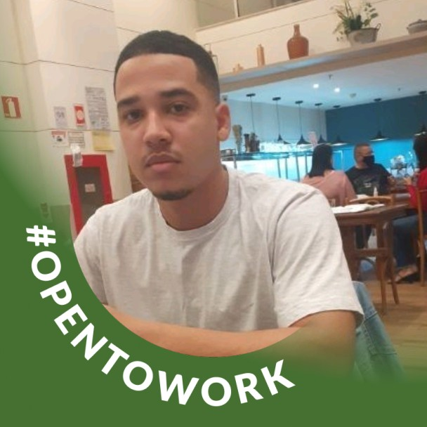

Conheça nossos colaboradores
Gestor Pessoal
Diego Marques
Busca desenvolver melhorias na área da tecnologia e educação! Realizando cursos de aprimoramento na área
da tecnologia. Possui experiência em projetos com HTML, Java Script e CSS, tendo conhecimento também em
gestão de projetos, trabalho em equipe e relacionamento interpessoal.
Desenvolvedora
Julia Lima
Focada em expandir minha experiência e me especializar na área da programação. Busca sempre se
aperfeiçoar e aprender cada vez mais. Iniciou o curso de Desenvolvimento Web - Full Stack, pelo projeto
Programadores Cariocas. Possui experiência em HTML, CSS, JavaScript, controle de versionamento (GitHub),
inglês: nível intermediário em Reading and Listening, nível básico em Writing e Speaking).
Gestor de Informação
Sergio Luiz
Possui conhecimento em Desenvolvimento de software e Programação Java , Java Script e a objetos.

Desenvolvedora
Suellen Siqueira
Formação intensiva em Desenvolvimento Web Full-Stack com mais de 550 horas de estudos, baseado no
desenvolvimento de habilidades soft e tech. Competências técnicas trabalhadas em desenvolvimento front
end usando HTML5, CSS3 e React.js e capacidade de aplicar a aprendizagem contínua e trabalhar em equipe
com postura profissional. Com formação acadêmica em Administração.
Diretor
Thiago Duarte
Quer levar a tecnologia a lugares onde ela é escassa, dar oportunidade a jovens a ingressar nesse futuro
brilhante que é o mundo TECH. Estudou 3 meses Programação web pela Udemy, depois desse curto período
ingressou no curso Programadores carioca. Possui experiência em projetos e metodologias ágeis e relações
interpessoais.